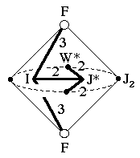
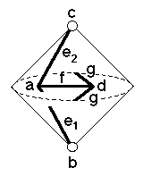

200
200
 202
202 Orbifold Atlas Home Page
Orbifold Atlas Home Page
 Crystallographic Topology Home Page
Crystallographic Topology Home Page
Underlying Topological Space: RP2 double suspension; Figure Pseudo-Symmetry (FPS): 2mm
Euclidean 3-Orbifold with Invariant-Lattice-Complex Letters
(left), Wyckoff Site Letters (right)
 
| FPS | Mult | Lattice Comp | Group Graph | Wyckoff Set | 2[4]Cover |
| 2-1 | I | 332 | a | ||
| 4-2 | F | 30 | b, c | ||
| 6-1 | J* | 222 | d | ||
| 8-2 | I4[-]F2 | 32<3>0 | (e1:b-a, e2:a-c)1 | ||
| 12-1 | I6[-]J*2 | 33<2>22 | (f:a-d)2 | ||
| 12-1 | J*2[W*]& | 2<2>& | (g:d-d)3 | ||
| 24 | 1 | h:efg | |||
| 2 | 24-1 | I12[J2]J*4 | 2*=332<1>222 | (h1:a-d)4 | #222(h) |
| 24-1 | F6[J2]F6 | 2*=30<1>30 | h2:b-c | [#202(e)] | |
| 24-1 | F6[-]W*2 | 2*=30<1>30 | h3:b-g, h4:c-g | #224(i,j) | |
| m | 24-1 | m* | (h5:fgh1)5 | #204(g) | |
| m | 24-1 | m* | (h6:eh2)6 | #224(k) | |
| Struct-Mult | Critical Points | Heegaard Surf | Wyckoff Cut |
| BCC -1 | I/FF/W*/J* | HP2 200{11} | f |
Lattice Points: (1) 0,0,0 + (1/4,1/4,1/4) x2; (2) 1/4,1/4,1/4 + (0,1/2,1/2); (3) 1/4,3/4,3/4 + (-1/4,0,0) &; (4) 1/4,1/4,1/4 + (0,-1/4,-1/4) x2: (5) 1/4,y,z; (6) x,x,z
200
202
Orbifold Atlas Home Page
Crystallographic Topology Home Page
Page last revised: